Дешифраторы
Дешифратор (декодеры) - это комбинационное устройство, преобразующее входной код в сигнал на одной отдельной выходной линии. Дешифраторы предназначены для преобразования параллельного двоичного кода в унитарный, т.е. позиционный код.
Дешифраторы решают следующие задачи:
- преобразование двоично-десятичного кода в десятичное число;
- преобразование двоично-десятичного кода в семеричный код, необходимый для индикации десятичного числа.
Дешифраторы выпускаются в виде отдельных микросхем или используются в составе других микросхем. В настоящее время десятичные или восьмеричные дешифраторы используются в основном как составная часть других микросхем, таких как мультиплексоры, демультиплексоры, ПЗУ или ОЗУ.
Классификация дешифраторов:
- По числу разрядов.
- В зависимости от преобразованных кодов:
- двоично-десятичный код в семисегментный;
- двоичный код в десятичное число.
- По принципу действия:
- линейный (матричный, или одноступенчатый);
- пирамидальный (многоступенчатый).
Дешифратор n-разрядного двоичного числа имеет выходов. Дешифратор называется полным, если он имеет количество выходов m, связанных с количеством разрядов n входного двоичного числа следующим соотношением:
m=2n
Дешифратор, у которого при n входах число выходов меньше 2n (m<2n), называется неполным.
Преобразование производится по правилам, описанным в таблицах истинности. Для построения дешифратора можно воспользоваться правилами построения схемы для произвольной таблицы истинности.
Обычно, указанный в схеме номер вывода дешифратора соответствует десятичному эквиваленту двоичного кода, подаваемого на вход дешифратора в качестве входных переменных, вернее сказать, что при подаче на вход устройства параллельного двоичного кода на выходе дешифратора появится сигнал на том выходе, номер которого соответствует десятичному эквиваленту двоичного кода. Отсюда следует то, что в любой момент времени выходной сигнал будет иметь место только на одном выходе дешифратора. В зависимости от типа дешифратора, этот сигнал может иметь как уровень логической единицы (при этом на всех остальных выходах уровень логического 0), так и уровень логического 0 (при этом на всех остальных выходах уровень логической 1). В дешифраторах каждой выходной функции соответствует только один минтерм, а количество функций определяется количеством разрядов двоичного числа. Если дешифратор реализует все минтермы входных переменных, то он называется полным дешифратором (в качестве примера неполного дешифратора можно привести дешифратор двоично-десятичных чисел).
Обозначение дешифраторов на принципиальных схемах показано на рис. 1.
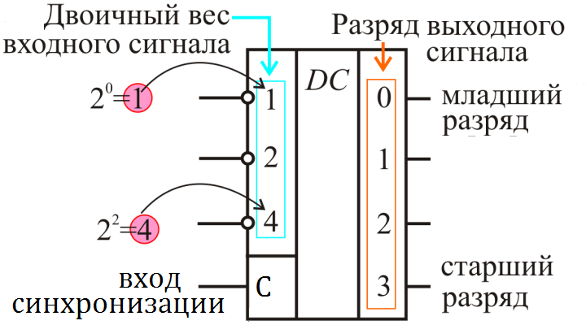 |
||
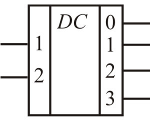 |
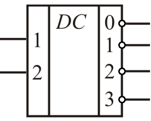 |
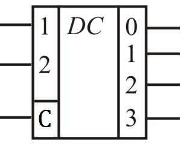 |
| а) | б) | в) |
Рис. 1 - Условное графическое обозначение дешифраторов
а) дешифратор с прямыми выходами,
б)
дешифратор с инверсными выходами
в) синхронный дешифратор
Линейный (одноступенчатый) дешифратор
Данный дешифратор используется, если на его вход подаётся двоично-десятичный код только в прямой форме. Схема такого дешифратора состоит из входных элементов “И-НЕ” и выходных схем “И”.
Таблица 1
| Входы | Выходы | ||||||||||||
|---|---|---|---|---|---|---|---|---|---|---|---|---|---|
| 8 | 4 | 2 | 1 | 0 | 1 | 2 | 3 | 4 | 5 | 6 | 7 | 8 | 9 |
| 0 | 0 | 0 | 0 | 1 | 0 | 0 | 0 | 0 | 0 | 0 | 0 | 0 | 0 |
| 0 | 0 | 0 | 1 | 0 | 1 | 0 | 0 | 0 | 0 | 0 | 0 | 0 | 0 |
| 0 | 0 | 1 | 0 | 0 | 0 | 1 | 0 | 0 | 0 | 0 | 0 | 0 | 0 |
| 0 | 0 | 1 | 1 | 0 | 0 | 0 | 1 | 0 | 0 | 0 | 0 | 0 | 0 |
| 0 | 1 | 0 | 0 | 0 | 0 | 0 | 0 | 1 | 0 | 0 | 0 | 0 | 0 |
| 0 | 1 | 0 | 1 | 0 | 0 | 0 | 0 | 0 | 1 | 0 | 0 | 0 | 0 |
| 0 | 1 | 1 | 0 | 0 | 0 | 0 | 0 | 0 | 0 | 1 | 0 | 0 | 0 |
| 0 | 1 | 1 | 1 | 0 | 0 | 0 | 0 | 0 | 0 | 0 | 1 | 0 | 0 |
| 1 | 0 | 0 | 0 | 0 | 0 | 0 | 0 | 0 | 0 | 0 | 0 | 1 | 0 |
| 1 | 0 | 0 | 1 | 0 | 0 | 0 | 0 | 0 | 0 | 0 | 0 | 0 | 1 |
В соответствии с принципами построения произвольной таблицы истинности по произвольной таблице истинности получим схему дешифртора, реализующего таблицу истинности, приведённую в таблице 1. Эта схема приведена на рисунке 2.
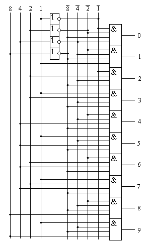
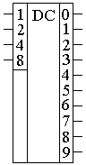
Рис. 2 - Принципиальная схема двоично-десятичного дешифратора и
его
условное графическое обозначение
Как видно на этой схеме для реализации каждой строки таблицы истинности потребовалась схема "4И". Схема "ИЛИ" не потребовалась, так как в таблице истинности на каждом выходе присутствует только одна единица.
Точно так же можно получить схему для любого другого дешифратора.
Функциональная схема дешифратора на 16 выходов приведена на рисунке 3. Для преобразования сигнала необходимо на входы V1 и V2 микросхемы подать сигналы логических нулей.
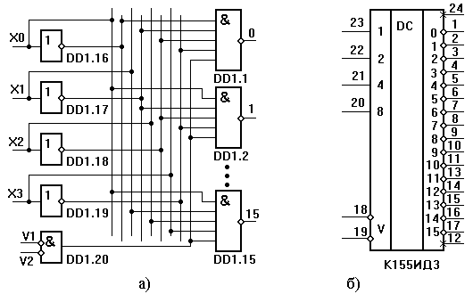
Рис. 3 - Схема и условное графическое обозначение двоично-десятичного дешифратора К155ИД3
Пусть на входе дешифратора присутствует двоичное число 1111. В этом случае на всех пяти входах элемента DD1.15 будут сигналы логических единиц, а на выходе этого элемента будет логический нуль. На выходах всех остальных 15 элементов будут сигналы логических единиц. Если хотя бы на одном из входов V логическая единица, то единицы будут на всех 16 выходах.
На рис. 4 представлен интегральный дешифратор К155ИД3. Входы E0 и E1 являются разрешающими. При наличии на них напряжения низкого уровня на одном из выходов дешифратора 0-15 также имеется напряжение низкого уровня, причем номер этого выхода является эквивалентом двоичного числа, поданного на входы 1, 2, 4, 8. Так, при подаче кодовой комбинации входных сигналов 0110 в активном состоянии будет выход 6 (вывод 7) При этом на всех остальных выходах будет напряжение высокого уровня. Если же на входы E0, E1 подать напряжение высокого уровня, то такое же напряжение будет на всех выходах дешифратора. Поэтому входы E0, E1 называют разрешающими или стробирующими.
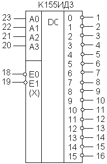
Рис. 4 - Условное графическое обозначение дешифратора К155ИД3
К преимуществу линейных дешифраторов можно отнести простоту схемы и высокое быстродействие, поскольку входные переменные одновременно поступают на все элементы И. Одновременно, без дополнительных задержек, формируется и результат на выходах этих элементов.
К недостаткам следует отнести:
- число используемых логических элементов с увеличением разрядности кода возрастает;
- одновременно с этим увеличивается и число входов логических элементов;
- наличие в схеме разнотипных логических элементов, что экономически не выгодно.
Пирамидальные дешифраторы
Пирамидальные дешифраторы позволяют реализовать схему на базе только двухвходовых элементов логического умножения (конъюнкции). Принцип построения этих дешифраторов состоит в том, что сначала строят линейный дешифратор для двухразрядного числа X1, X2, для чего необходимы 22=4 двухвходовые схемы И. Далее, каждая полученная конъюнкция логически умножается на входную переменную X3 в прямой и инверсной форме. Полученная конъюнкция снова умножается на входную переменную X4 в прямой и инверсной форме и т.д. Наращивая таким образом структуру, можно построить пирамидальный дешифратор на произвольное число входов.
На рис. 5 приведена реализация дешифратора 3×8. Схема этого дешифратора состоит только из схем «И». Но на входы этой схемы должен подаваться только двоичный код числа как в прямом, так и в инверсном виде.
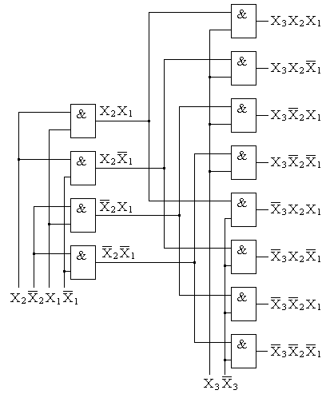
Рис. 5 - Схема пирамидального дешифратора 3×8
Для построения такого дешифратора потребуется 12 двухвходовых элементов 2И и три инвертора (на схеме не показаны). Пирамидальные дешифраторы при больших количествах входных переменных позволяют несколько упростить конструкцию устройства, т.е. уменьшить количество интегральных микросхем.
Семисегментный дешифратор
Для отображения десятичных и шестнадцатеричных цифр часто используется семисегментный индикатор. Изображение семисегментного индикатора и название его сегментов приведено на рисунке 6.
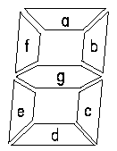
Рис. 6 - Изображение семисегментного индикатора и название его сегментов
Для изображения на таком индикаторе цифры 0 достаточно зажечь сегменты a, b, c, d, e, f. Для изображения цифры '1' зажигают сегменты b и c. Точно таким же образом можно получить изображения всех остальных десятичных или шестнадцатеричных цифр. Все комбинации таких изображений получили название семисегментного кода.
Составим таблицу истинности дешифратора, который позволит преобразовывать двоичный код в семисегментный. Пусть сегменты зажигаются нулевым потенциалом. Тогда таблица истинности семисегментного дешифратора примет вид, приведенный в таблице 1. Конкретное значение сигналов на выходе дешифратора зависит от схемы подключения сегментов индикатора к выходу микросхемы.
Таблица 2
| Входы | Выходы | |||||||||
|---|---|---|---|---|---|---|---|---|---|---|
| 8 | 4 | 2 | 1 | a | b | c | d | e | f | g |
| 0 | 0 | 0 | 0 | 0 | 0 | 0 | 0 | 0 | 0 | 1 |
| 0 | 0 | 0 | 1 | 1 | 0 | 0 | 1 | 1 | 1 | 1 |
| 0 | 0 | 1 | 0 | 0 | 0 | 1 | 0 | 0 | 1 | 0 |
| 0 | 0 | 1 | 1 | 0 | 0 | 0 | 0 | 1 | 1 | 0 |
| 0 | 1 | 0 | 0 | 1 | 0 | 0 | 1 | 1 | 0 | 0 |
| 0 | 1 | 0 | 1 | 0 | 1 | 0 | 0 | 1 | 0 | 0 |
| 0 | 1 | 1 | 0 | 0 | 1 | 0 | 0 | 0 | 0 | 0 |
| 0 | 1 | 1 | 1 | 0 | 0 | 0 | 1 | 1 | 1 | 1 |
| 1 | 0 | 0 | 0 | 0 | 0 | 0 | 0 | 0 | 0 | 0 |
| 1 | 0 | 0 | 1 | 0 | 0 | 0 | 0 | 1 | 0 | 0 |
В соответствии с принципами построения произвольной таблицы истинности по произвольной таблице истинности получим принципиальную схему семисегментного дешифратора, реализующего таблицу истинности, приведённую в таблице 1. На этот раз не будем подробно расписывать процесс разработки схемы. Полученная принципиальная схема семисегментного дешифратора приведена на рисунке 7.
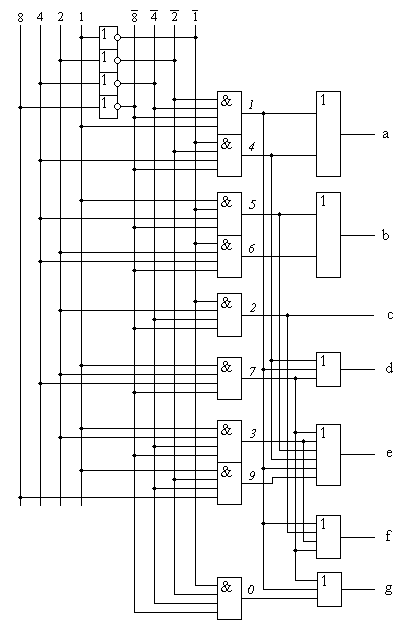
Рис. 7 - Принципиальная схема семисегментного дешифратора
Для облегчения понимания принципов работы схемы на выходе логических элементов "И" показаны номера строк таблицы истинности, реализуемые ими.
Например, на выходе сегмента 'a' логическая единица появится только при подаче на вход комбинации двоичных сигналов 0001 (1) и 0100 (4). Это осуществляется объединением соответствующий цепей элементом "2ИЛИ". На выходе сегмента 'b' логическая единица появится только при подаче на вход комбинации двоичных сигналов 0101 (5) и 0110 (6), и так далее.
В настоящее время семисегментные дешифраторы выпускаются в виде отдельных микросхем или используются в виде готовых блоков составе других микросхем. Условно-графическое обозначение микросхемы семисегментного дешифратора приведено на рисунке 8.
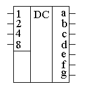
Рис. 8 - Принципиальная схема семисегментного дешифратора
В качестве примера семисегментных дешифраторов можно назвать такие микросхемы отечественного производства как К176ИД3. В современных цифровых схемах семисегментные дешифраторы обычно входят в состав больших интегральных схем.
Cинтез дешифратора
Рассмотрим пример синтеза дешифратора (полного) 3×8, следовательно, количество разрядов двоичного числа - 3, количество выходов - 8.
Таблица 3
| Х2 | Х1 | Х0 | Y0 | Y1 | Y2 | Y3 | Y4 | Y5 | Y6 | Y7 | |
|---|---|---|---|---|---|---|---|---|---|---|---|
| 0 | 0 | 0 | 1 | 0 | 0 | 0 | 0 | 0 | 0 | 0 | |
| 0 | 0 | 1 | 0 | 1 | 0 | 0 | 0 | 0 | 0 | 0 | |
| 0 | 1 | 0 | 0 | 0 | 1 | 0 | 0 | 0 | 0 | 0 | |
| 0 | 1 | 1 | 0 | 0 | 0 | 1 | 0 | 0 | 0 | 0 | |
| 1 | 0 | 0 | 0 | 0 | 0 | 0 | 1 | 0 | 0 | 0 | |
| 1 | 0 | 1 | 0 | 0 | 0 | 0 | 0 | 1 | 0 | 0 | |
| 1 | 1 | 0 | 0 | 0 | 0 | 0 | 0 | 0 | 1 | 0 | |
| 1 | 1 | 1 | 0 | 0 | 0 | 0 | 0 | 0 | 0 | 1 |
Как следует из таблицы состояния, каждой функции соответствует только один минтерм, следовательно, не требуется минимизировать эти функции (рис. 9).
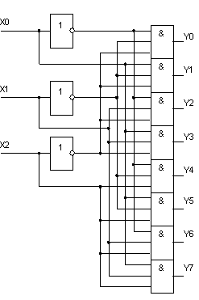
Рис. 9 - Схема полного дешифратора 3×8
Из полученных уравнений и схемы дешифратора следует, что для реализации полного дешифратора на m входов (переменных) потребуются n = 2m элементов конъюнкции (количество входов каждого элемента “И” равно m) и m элементов отрицания.
Двухступенчатые дешифраторы на интегральных микросхемах
Пример дешифратора для пятиразрядного двоичного кода. Каждый дешифратор выполнен с управляющими входами, объединенными конъюнктивно. При выполнении условия конъюнкции на выходе, номер которого соответствует десятичному эквиваленту двоичного кода, появится уровень логического “0”. В противном случае все выходы находятся в состоянии логической единицы (рис. 10). Как следует из рис. 6, пятиразрядный дешифратор, имеющий 32 выхода, выполнен на базе четырех дешифраторов с использованием лишь одного дополнительного инвертора, что достигнуто благодаря наличию входной управляющей логики каждой интегральной микросхемы. Нетрудно заметить, что входная логика дешифраторов КР1533ИД7 позволяет реализовать функцию дешифратора 2×3 без дополнительных элементов, а полного дешифратора 2×4 с использованием одного инвертора.
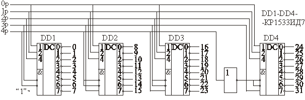
Рис. 10 - Схема полного пятиразрядного дешифратора 32 выхода
Источники
life-prog.ru - Дешифраторы | Схема дешифратора
poznayka.org - Назначение и принцип работы микросхем дешифраторов
poisk-ru.ru - Линейный (матричный или одноступенчатый) дешифратор
studfile.ne - Принцип построения дешифратора для семисегментного индикатора